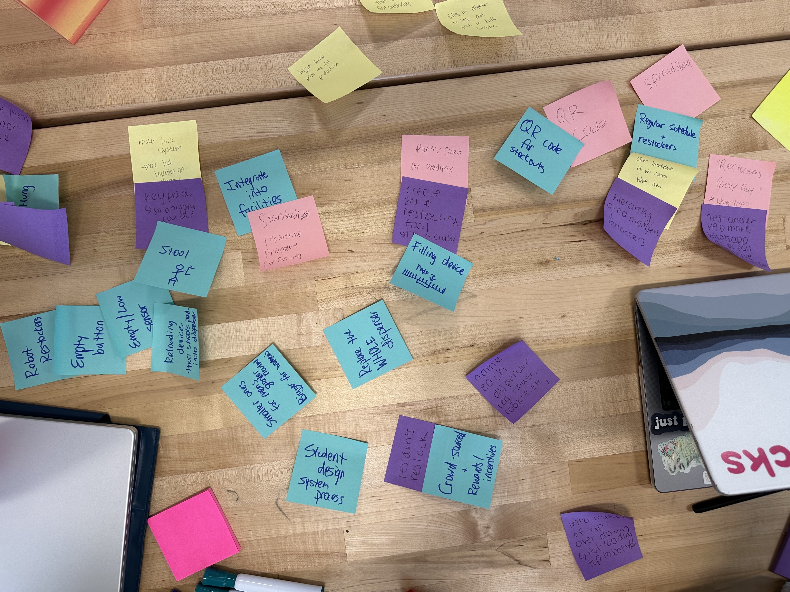
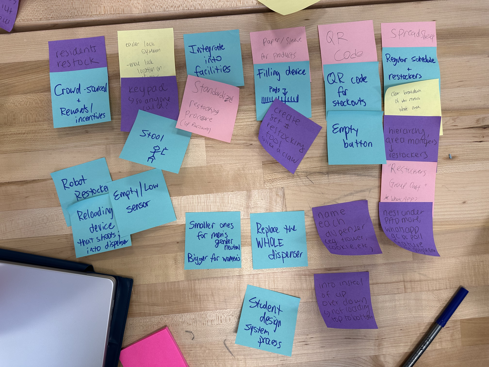
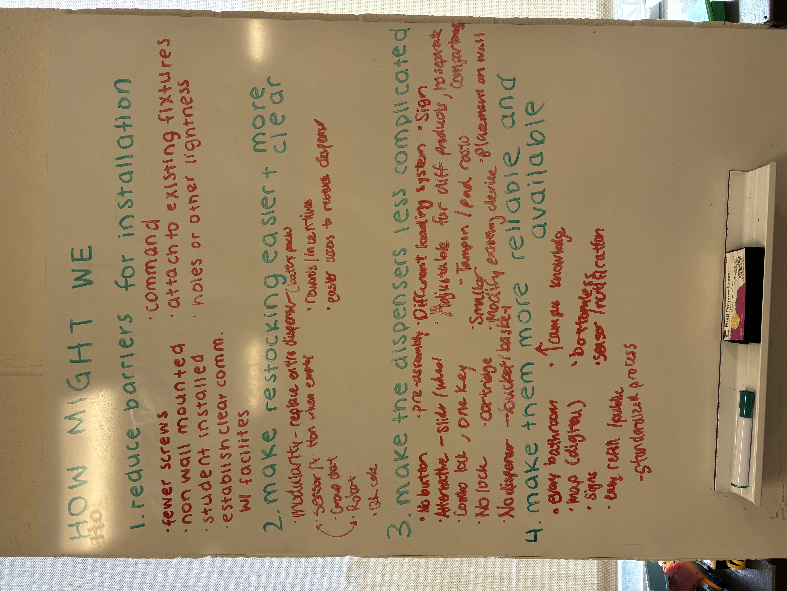
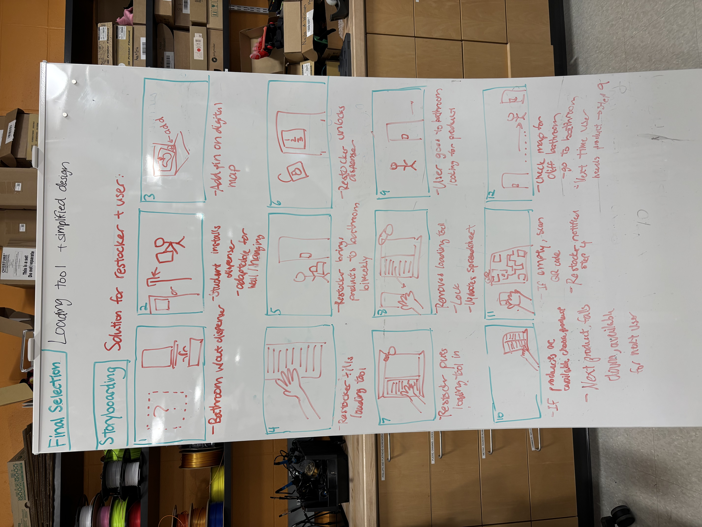

Problem Definition
With the problem definition step of our engineering process, our team worked on convergent thinking to narrow our scope and focus of our design.
Thematic Analysis
We first worked on debriefing the main points and experiences from conducting our four interviews. From there, we began analyzing the main themes from our interviews and clustering them based on similar topics. The main themes that emerged from our conversations were installation (why are we doing this?), the restocking process (how?), characteristics of the dispenser (what?), and reliability.
 Thematic Analysis
Thematic Analysis
Insight Statements
With our insight statements, we boiled down the most valuable learning moments that emerged from our research, centering on empathetic design that would have an impact on the community and its users.
 Insight Statements
Insight Statements
"How Might We?" Statements
Our “How Might We?” statements helped us start thinking about potential questions that would be solved through our redesign.
 "How Might We?" Statements
"How Might We?" Statements
Brainstorming
Ideate, Organize, Narrow Down, & Final Selection
In the brainstorming process, we each individually came up with ideas or features in our design that could be incorporated. We had ideas that were feasible and those were really imaginative, creative, ambitious, and less-feasible but all of it was helpful to hear about.
 Collection of our individual ideas for brainstormingFrom there, we shared our ideas from the sticky notes and lumped them together if multiple people had similar ideas. Finally, we wrote down the main themes that emerged from our sticky note brainstorming. We repeated this process for each individual “How Might We?” statement. In the last step of our brainstorming process, we narrowed down our final selection of features we wanted to include in our design: adaptability in installation of the dispenser for wall mounted vs. hook cases, creating a loading tool to make refilling the dispensers easier (especially for pads), and adjusting the locking feature for the dispenser so it would be less clunky when opened and easier to refill.
 Grouped sticky note ideas by similar theme  Major themes that emerged from brainstorming (written in red) Top ideas that we want to include in our final design
Top ideas that we want to include in our final design
Storyboard
In our storyboard, we focused on the three major parts of the user lifecycle of the dispensers: installation, restocking, and daily use.
 Storyboard